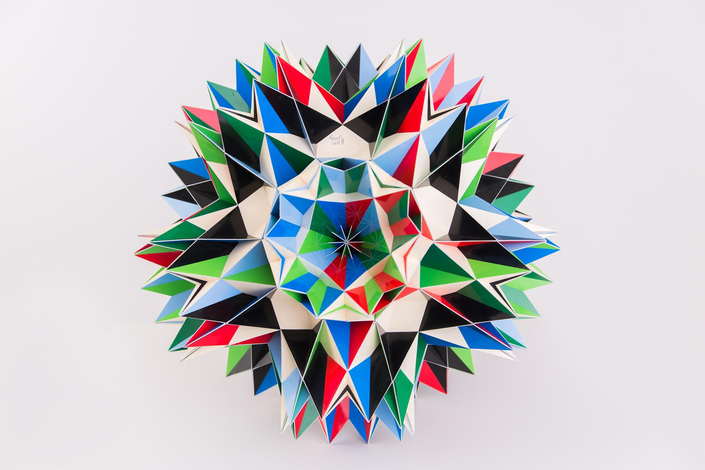

Great Diretrosnub Icosidodecahedron

This model is actual a compound of two Great Inverted Retrosnub Icosidodecahedra. It isn't my habit to build big complex models, but when I heard that Fr. Magnus Wenninger had passed away on February 17, 2017, slowly the idea of building one complex model as a tribute to him.
The first book I ever bought about polyhedron models was Magnus Wenninger's book "Polyhedron Models". In the end of the book were some models that were absolutely stunning. I couldn't comprehend how it was possible that someone could build that. I thought it would be fitting to try to build one of these models: the the Great Inverted Retrosnub Icosidodecahedron. But then my eye fell on the compound of two of these. Apparently it had only be built twice before: One by Piotr Pawlikowski and one by Jonathan Bowers.
First I started preparing templates. Usually I draw these by hand, but since I needed to cut and paste 2580 parts, prepared a PDF file with pieces "close" to each other and so that I could print these out on Chromolux, the cardboard that I use. The pieces are glued together by tabs, be for the tabs I used paper. This means that I cut out the cardboard pieces first, then I glue them on paper together, then I cut these out leaving some paper tabs (which means that I cut out everything twice). The PDF file also contains some pages that need to be printed on the paper that is used to glue the cardboard pieces on.
With the templates done I started building at the end of March and the model was ready February 17, 2018. Coincidently this was one year after Magnus Wenninger died (which I only realised weeks later).
Here are some more pictures of the model:
{kind=link}
{kind=link}
{kind=link}
For all pictures the copyright is by PhotoArt Studio Hörby
Last Updated
2018-05-24